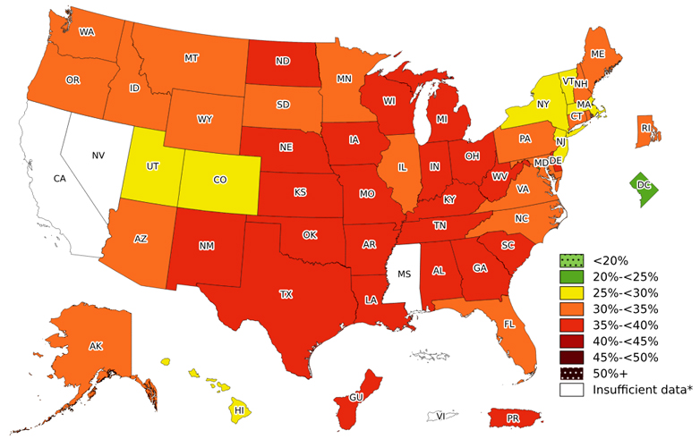

Geographic view
Adult obesity prevalence
Hover for details · click to keep a state selected
Unavailable / suppressed
Visualization critique & redesign
Explore how self-reported adult obesity prevalence varies geographically and across population groups.
Can one stable map and a linked ranking make demographic exploration easier than scrolling through many separate maps?
Redesigned visualization
The map emphasizes where patterns occur. The ranking uses aligned position to show which states are higher or lower, and by how much.
Geographic view
Hover for details · click to keep a state selected
Quantitative view
Same data, encoded by position
Original visualization
The CDC publishes separate static choropleths for overall prevalence, age groups, and race/ethnicity groups. Each map is effective for broad spatial pattern detection, but comparison across groups requires scrolling and remembering earlier maps.
MessageAdult obesity is widespread, but prevalence and geographic patterns vary across states and population groups.
AudiencePublic-health practitioners and policymakers, researchers, journalists, and members of the public.
Primary tasksLocate a state, identify its prevalence category, notice regional clustering, and inspect how patterns differ across published groups.

Critique → redesign
State location makes regional clustering visible. The redesign preserves the map as its primary view.
Repeated state shapes and ordered prevalence color make each original map individually easy to interpret. The redesign keeps a stable geography and ordered color scale.
Comparing groups depends on navigation and memory. Selectors instead update one persistent geographic frame.
Separate sections slow exploratory switching. Characteristic and subgroup controls make the same views update directly while displaying the active period.
Color is weaker than aligned position for exact comparison, and large states attract more attention. The linked ranking and tooltip expose exact values.
Data & sources
Overall and age estimates use BRFSS 2025. Race/ethnicity estimates pool BRFSS 2023–2025. The interface displays the active period rather than implying that every group shares an identical time window.
An estimate is unavailable when the sample size is below 50, the relative standard error is at least 30%, or no data are available. Missing values are never converted to zero.